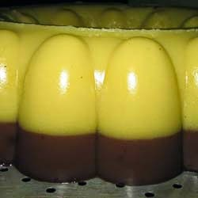

Puding Jagung Coklat

Bahan A:
- 500 ml Santan
- 125 gr jagung manis
- 120 gr gula pasir
- 1 sendok makan tepung maizena
- 1 sachet agar-agar bubuk
- Pewarna kuning secukupnya.
Bahan B:
- 500 ml air
- 1/4 kaleng susu kental manis coklat
- 120 gr gula pasir (atau sesuai selera)
- 1 sendok makan tepung maizena
- 1 sachet agar-agar bubuk
- 25 gr coklat bubuk
Cara Membuat :
- Blender jagung manis (tambahkan sedikit santan sampai jagung tercelup) agar lebih mudah memblendernya.
- Campurkan semua bahan A termasuk jagung yang sudah diblender, panaskan diatas api hingga mendidih. Tambahkan beberapa tetes pewarna makanan, warna kuning lebih baik untuk menghidupkan warna jagungnya.
- Tuangkan dalam cetakan.
- Campurkan semua bahan B, panaskan diatas api hingga mendidih. Kemudian tuang kedalam cetakan diatas bahan A.
- Setelah uap panas hilang, simpan dilemari es hingga dingin.
- Setelah cukup dingin, keluarkan dari lemari es dan hidangkan